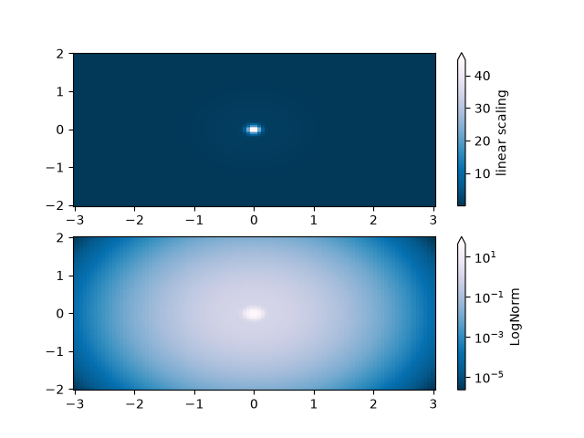
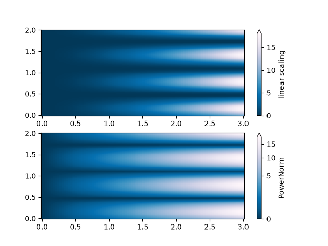
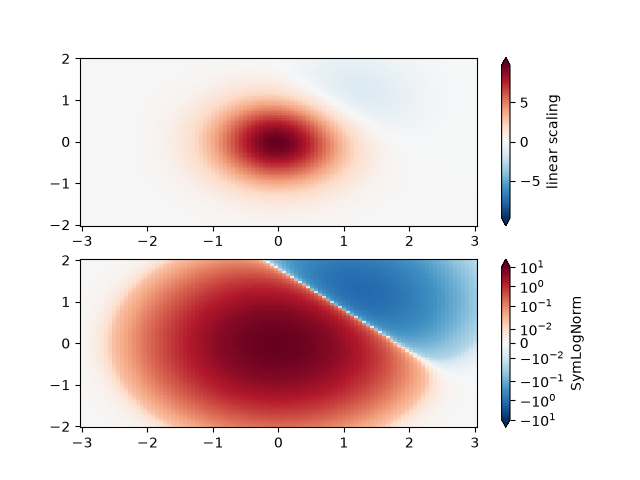
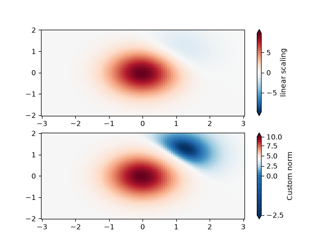
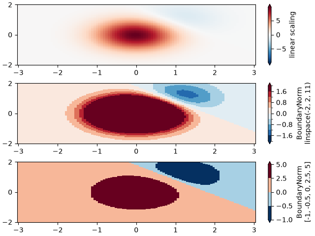

Note
Go to the end to download the full example code.
Colormap normalizations#
Demonstration of using norm to map colormaps onto data in non-linear ways.
import matplotlib.pyplot as plt
import numpy as np
import matplotlib.colors as colors
N = 100
LogNorm#
This example data has a low hump with a spike coming out of its center. If plotted using a linear colour scale, then only the spike will be visible. To see both hump and spike, this requires the z/colour axis on a log scale.
Instead of transforming the data with pcolor(log10(Z)), the color mapping can be
made logarithmic using a LogNorm.
X, Y = np.mgrid[-3:3:complex(0, N), -2:2:complex(0, N)]
Z1 = np.exp(-X**2 - Y**2)
Z2 = np.exp(-(X * 10)**2 - (Y * 10)**2)
Z = Z1 + 50 * Z2
fig, ax = plt.subplots(2, 1)
pcm = ax[0].pcolor(X, Y, Z, cmap='PuBu_r', shading='nearest')
fig.colorbar(pcm, ax=ax[0], extend='max', label='linear scaling')
pcm = ax[1].pcolor(X, Y, Z, cmap='PuBu_r', shading='nearest',
norm=colors.LogNorm(vmin=Z.min(), vmax=Z.max()))
fig.colorbar(pcm, ax=ax[1], extend='max', label='LogNorm')

PowerNorm#
This example data mixes a power-law trend in X with a rectified sine wave in Y. If plotted using a linear colour scale, then the power-law trend in X partially obscures the sine wave in Y.
The power law can be removed using a PowerNorm.
X, Y = np.mgrid[0:3:complex(0, N), 0:2:complex(0, N)]
Z = (1 + np.sin(Y * 10)) * X**2
fig, ax = plt.subplots(2, 1)
pcm = ax[0].pcolormesh(X, Y, Z, cmap='PuBu_r', shading='nearest')
fig.colorbar(pcm, ax=ax[0], extend='max', label='linear scaling')
pcm = ax[1].pcolormesh(X, Y, Z, cmap='PuBu_r', shading='nearest',
norm=colors.PowerNorm(gamma=0.5))
fig.colorbar(pcm, ax=ax[1], extend='max', label='PowerNorm')

SymLogNorm#
This example data has two humps, one negative and one positive, The positive hump has 5 times the amplitude of the negative. If plotted with a linear colour scale, then the detail in the negative hump is obscured.
Here we logarithmically scale the positive and negative data separately with
SymLogNorm.
Note that colorbar labels do not come out looking very good.
X, Y = np.mgrid[-3:3:complex(0, N), -2:2:complex(0, N)]
Z1 = np.exp(-X**2 - Y**2)
Z2 = np.exp(-(X - 1)**2 - (Y - 1)**2)
Z = (5 * Z1 - Z2) * 2
fig, ax = plt.subplots(2, 1)
pcm = ax[0].pcolormesh(X, Y, Z, cmap='RdBu_r', shading='nearest',
vmin=-np.max(Z))
fig.colorbar(pcm, ax=ax[0], extend='both', label='linear scaling')
pcm = ax[1].pcolormesh(X, Y, Z, cmap='RdBu_r', shading='nearest',
norm=colors.SymLogNorm(linthresh=0.015,
vmin=-10.0, vmax=10.0, base=10))
fig.colorbar(pcm, ax=ax[1], extend='both', label='SymLogNorm')

Custom Norm#
Alternatively, the above example data can be scaled with a customized normalization. This one normalizes the negative data differently from the positive.
# Example of making your own norm. Also see matplotlib.colors.
# From Joe Kington: This one gives two different linear ramps:
class MidpointNormalize(colors.Normalize):
def __init__(self, vmin=None, vmax=None, midpoint=None, clip=False):
self.midpoint = midpoint
super().__init__(vmin, vmax, clip)
def __call__(self, value, clip=None):
# I'm ignoring masked values and all kinds of edge cases to make a
# simple example...
x, y = [self.vmin, self.midpoint, self.vmax], [0, 0.5, 1]
return np.ma.masked_array(np.interp(value, x, y))
fig, ax = plt.subplots(2, 1)
pcm = ax[0].pcolormesh(X, Y, Z, cmap='RdBu_r', shading='nearest',
vmin=-np.max(Z))
fig.colorbar(pcm, ax=ax[0], extend='both', label='linear scaling')
pcm = ax[1].pcolormesh(X, Y, Z, cmap='RdBu_r', shading='nearest',
norm=MidpointNormalize(midpoint=0))
fig.colorbar(pcm, ax=ax[1], extend='both', label='Custom norm')

BoundaryNorm#
For arbitrarily dividing the color scale, the BoundaryNorm may be used; by
providing the boundaries for colors, this norm puts the first color in between the
first pair, the second color between the second pair, etc.
fig, ax = plt.subplots(3, 1, layout='constrained')
pcm = ax[0].pcolormesh(X, Y, Z, cmap='RdBu_r', shading='nearest',
vmin=-np.max(Z))
fig.colorbar(pcm, ax=ax[0], extend='both', orientation='vertical',
label='linear scaling')
# Evenly-spaced bounds gives a contour-like effect.
bounds = np.linspace(-2, 2, 11)
norm = colors.BoundaryNorm(boundaries=bounds, ncolors=256)
pcm = ax[1].pcolormesh(X, Y, Z, cmap='RdBu_r', shading='nearest',
norm=norm)
fig.colorbar(pcm, ax=ax[1], extend='both', orientation='vertical',
label='BoundaryNorm\nlinspace(-2, 2, 11)')
# Unevenly-spaced bounds changes the colormapping.
bounds = np.array([-1, -0.5, 0, 2.5, 5])
norm = colors.BoundaryNorm(boundaries=bounds, ncolors=256)
pcm = ax[2].pcolormesh(X, Y, Z, cmap='RdBu_r', shading='nearest',
norm=norm)
fig.colorbar(pcm, ax=ax[2], extend='both', orientation='vertical',
label='BoundaryNorm\n[-1, -0.5, 0, 2.5, 5]')
plt.show()

Total running time of the script: (0 minutes 2.026 seconds)